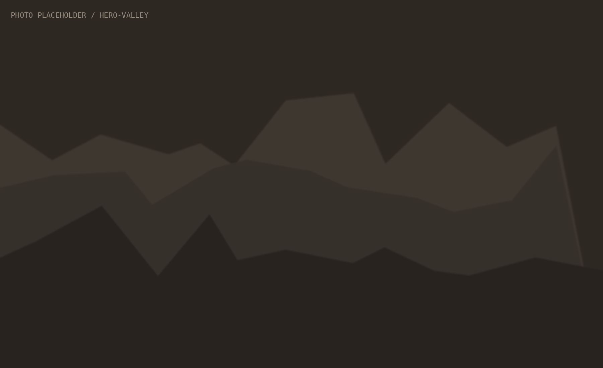
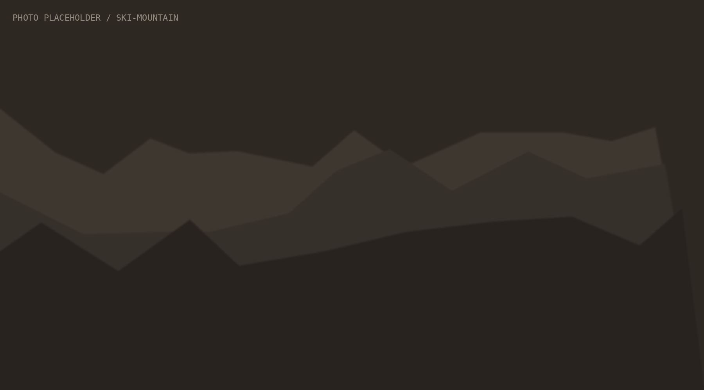

Ski
Yes. Those giant white things behind the Congress Centre are usable.
Five mountains. Several ways to disappear from WEF for a few hours.
Mountains
Which mountain?
Wait. There's more than one?
Source: Davos Klosters Bergbahnen, the lift operator.
Ski map · tap a mountain
Five mountains. One valley.
From Davos Dorf
Parsenn.
- Get there
- Parsennbahn, next to Davos Dorf station. From Klosters: Gotschnabahn.
- Pick it if
- You only get one day.
Our drawing, not the official piste map. Live details: Davos Klosters Bergbahnen.
01 · from Davos Dorf
Parsenn.
The big classic. Access from Davos Dorf via the Parsennbahn and from Klosters via the Gotschnabahn. If you have one proper ski day, start here.
For
Everyone.Get there
Parsennbahn, next to Davos Dorf station.Good to know
Long runs, some all the way down to Klosters.Pick it if
You only get one day.02 · from Davos Platz
Jakobshorn.
Right by Davos Platz. Convenient if your meeting mysteriously finishes early.
For
A short escape. Freestyle and snowpark.Get there
Cable car across from Davos Platz station.Good to know
The closest mountain to the Platz end of the Promenade.Pick it if
You have three hours between two meetings.03 · Davos Glaris
Rinerhorn.
Further down the valley. Quieter. Good for: fewer badges.
For
Families and relaxed skiers.Get there
Train or bus to Davos Glaris.Good to know
Calmer than the big two, even during WEF.Pick it if
You want a day where nobody asks what you do.04 · above Davos Dorf
Pischa.
The quiet one up the Flüela road. Less piste, more powder.
For
Freeriders and people who like quiet.Get there
By bus from Davos Dorf towards the Flüela pass.Good to know
Off-piste means avalanche risk. Read the bulletin first.Pick it if
You want fewer people and more snow.05 · Klosters
Madrisa.
Over in Klosters. Sunny, family-friendly, and far enough away to forget the Promenade.
For
Families, sunny slopes.Get there
Train to Klosters Dorf, then the Madrisa gondola.Good to know
Check whether your guest card covers the trip to Klosters.Pick it if
You need to leave Davos to remember it exists.Piste colours
There is no green.
Swiss pistes come in three colours. The easiest one is blue. Switzerland is being optimistic.
Easy. Still a mountain.
Intermediate. Steeper than it looks from the chairlift.
Difficult. Not the place to test your new boots.
Marked but not groomed or checked like a piste. The colour on the piste map varies, so read the legend.
Rental & passes
You didn't bring skis. Nobody did.
Rent?
Sport shops in Dorf and Platz, many next to the lifts.Book ahead?
During WEF week, yes.Pass?
At the valley station or online. Prices can change by day.Hotel deal?
Some hotels include lift passes. Ask before you buy.A day pass covers the whole Davos Klosters area. Check the current options on the official site before you queue.

The mountain has opinions
When does the mountain close? 4pm means 4pm.
The mountain does not care that your panel ran late. Last lift up is around 4pm; last lift down is shortly after. Check the day's status, not yesterday's memory.
Check live lift status →Weather
Sun down here. Wind up there.
Sun in the valley does not mean sun at 2,600 m. Wind closes upper lifts. Fresh snow off-piste means avalanche risk.
MeteoSwiss ↗, or today's numbers on our Live page.
Published by SLF, which is based in Davos. White Risk app or slf.ch ↗
Rega air rescue 1414 · Ambulance 144